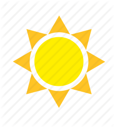

Центр развития

В этом разделе “Киндерленд” предлагает следующие услуги:
- Обучение деток с 8ми месяцев до 2х лет и эта группа называется “Солнышки”
- Обучение деток с 2х до 6ти лет на не полный день и полный день пребывания с Пн-Пт.
ГРУППА “Солнышки”
Это детки с мамами которые посещают занятия 2-3 раза в неделю. Занятие длится 1 час и включает в себя 3 занятия одно сменяет другое и это:
Это детки с мамами которые посещают занятия 2-3 раза в неделю. Занятие длится 1 час и включает в себя 3 занятия одно сменяет другое и это:
- Гимнастика и логоазбука
- Творчиство (рисование, лепка, апликация)
- Английский
Все занятия преподаются разными педагогами и проходят в форме игры-сказки распространенную на все 1-часовое занятие, деткам преподносится нужный материал в легкой и непринужденной форме. Гимнастика и логоазбука направленна на мелкую моторику ребенка, которая отвечает за правильную работу обоих полушарий мозга, а логоазбука с ее множеством потешек, песенок и стишочков помогает ребенку в речи и конечно же все это подкрепляется веселой музыкой, как настоящими инструментами так и всевозможными CD записями и работой квалифицировонного педагога. Гимнастика и логоазбука занимает по времени около 30 минут. Следующий этап это Творчество. После подвижного занятия мы окунаем вашего малыша в мир творчества. На этих занятиях детки работают с натуральными материалами, рисуют пальчиками, ножками, лепят, осваивают разную технику в творчестве и т.д. Занятие по творчеству занимает по времени 15 минут и затем детки плавно переходят на английский. Здесь Вашего малыша встречает Тедди медвижонок и окунает их в английский язык с помощью подвижных песен, стишочков, серии мультфильмов про Тедди и его друзей(2-3мин). Так же задействуем мелкую моторику и на английском языке, перебирая овощи и фрукты, называем цвета и много другово. И не стоит не дооценивать этот возраст в изучениии любого предмета, а особенно иностранного языка, у детей до 2-3 лет идет накопительная система словарного запаса и затем в определенный момент и возраст ребенок выдает все то что в него закладывали. Более того результат не заставит себя ждать,сначало они молчат, но через 4-5 занятий они выполняют в движениях почти все что преподавалось на этих 5ти занятий.
Если Вашему малышу уже 8месяце – смело приходите к нам!
Следующая возрасная категория это малыши от 2х – 6ти лет.
Если Вашему малышу уже 8месяце – смело приходите к нам!
Следующая возрасная категория это малыши от 2х – 6ти лет.
“Киндерленд” практикует как возрасные так и разно возрасные группы.
Если Вашему малышу от 2х – 6ти лет он может посещать группу своего возраста на пол дня с 8:30 – 12:30 с Пн-Пт и сюда входит:
Если Вашему малышу от 2х – 6ти лет он может посещать группу своего возраста на пол дня с 8:30 – 12:30 с Пн-Пт и сюда входит:
- 3-4 занятия в игровой форме;
- второй завтрак ( печеньки, сезонные фрукты, компот или чай);
- прогулка в сосновом парке;
В таких группах детей не больше 12 человек и в яслях обязательно 2 воспитателя, один воспитатель проводит занятие, второй помощник.
В “Киндерленде” каждый предмет ведет отдельный воспитатель, отсюда и качество образования и успеваемости деток. Для детей этой категории существует министерская программа и “Киндерленд” успешно подобрал разные методики, материалы и наочности с которыми коллектив хорошо справляется.
В “Киндерленде” каждый предмет ведет отдельный воспитатель, отсюда и качество образования и успеваемости деток. Для детей этой категории существует министерская программа и “Киндерленд” успешно подобрал разные методики, материалы и наочности с которыми коллектив хорошо справляется.

Услуга пол дня это не только занятия, но так же детки учатся ухаживать за собой и за своими вещами, самостоятельно себя обслуживать, приобритают навыки практической жизни, культуры, этики и вежливости, здоровье и гигиена, преодолевать барьеры эгоизма и идти на встречу миру, учится договориваться и находить компромисы.
Вашему малышу уже 2 года – тогда мы ждем Вас!